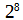

Conocer el formato de los archivos con los que podemos crear contenido es importante para saber cómo gestionar y almacenar la información en nuestro sistema.
Formato PDF
PDF (Portable Document Format, “formato de documento portátil”) es un formato de almacenamiento para documentos digitales muy utilizado y es independiente del software y del hardware.
Es un estándar abierto, reconocido por la Organización Internacional para la Estandarización (ISO). Los documentos PDF pueden contener vínculos y botones, campos de formulario, audio, vídeo y lógica empresarial. Se pueden firmar electrónicamente y podemos visualizarlos utilizando el software gratuito Acrobat Reader o en el navegador. También podemos editarlos usando la aplicación gratuita Draw de LibreOffice.
Los archivos de texto
Entre los archivos de texto están los que guardan texto plano (con extensión .txt) y los que almacenan texto con formato e incluso imágenes (por ejemplo un documento de word).
Cuando escribimos un texto y lo guardamos en el ordenador, el procesador de textos lo almacena, por defecto, con un formato específico, propio del programa. Sin embargo, los procesadores de texto suelen ofrecernos la posibilidad de guardar nuestros documentos en otros formatos.
TXT: formato de fichero de texto plano, no incluye ningún tipo de formato, ni otro tipo de elementos que no sea texto (imágenes, tablas, etc.). Se suele usar en ficheros de configuración del sistema operativo.
ODT o open Document: es el formato por defecto de LibreOffice Writer. Se trata de un formato de archivo estándar y abierto, que permite también el almacenamiento de hojas de cálculo, presentaciones, etc.
DOC,DOCX (a partir de Word 2007): son formatos de documentos de Word.
RTF: Formato de texto enriquecido. Permite añadir algún tipo de formato relativo al texto, como la negrita, cursiva, etc. La mayoría de los procesadores de texto pueden abrir archivos con este formato.
HTML: Lenguaje de Marcas de Hipertexto. Son ficheros de texto que contienen etiquetas HTML. HTML es un lenguaje de programación basado en etiquetas que nos permite crear páginas web. Estos ficheros son comprensibles para un navegador, es decir, cuando abrimos un archivo html en un navegador no vemos el contenido como tal (las etiquetas) sino la página web.
Las imágenes
En términos generales, se suelen distinguir dos tipos de imágenes:
- los mapas de bits o gráficos rasterizados: son los más usados. Se componen de puntos o píxeles. Cuanto menor sea la dimensión de dichos píxeles y cuantos más haya, mayor será la resolución o la calidad del archivo de imagen y, por tanto, también el tamaño del archivo. Una desventaja es que al ampliar o reducir la imagen se produce una pérdida de calidad. Ejemplos de este tipo de imágenes son los formatos jpeg y png.
- las imágenes vectoriales: como su nombre indica, las imágenes están compuestas por vectores, con lo cual, al ampliar o reducir una imagen, no perdemos calidad. Son formatos adecuados para imágenes sencillas, ya que los detalles como sombras, iluminación, etc, es más difícil representarla con vectores.
Los formatos de imágenes más usados:
JPEG/JPG: es el más utilizado, ya que no suele ocupar gran tamaño y tiene una calidad más que aceptable. Se basa en la compresión con pérdida, esto implica que, cuando desde una aplicación guardemos una imagen jpeg podremos ajustar el grado de compresión, de tal manera que, a medida que aumentemos ese grado de compresión se perderá información de la imagen, el tamaño será menor y esta perderá algo de calidad. Una desventaja de este formato es que no soporta transparencia.
PNG: Portable Networks Graphics. Al contrario que el anterior, sigue una técnica de compresión sin pérdidas para mantener la calidad general de las imágenes. Lo que distingue a este formato de otros es que admite la transparencia, es decir, que el fondo de la imagen puede ser transparente, lo cual nos permite superponerlas sobre otras.
GIF: Graphics Interchange Format. Una de sus principales características es que permite agrupar varias imágenes en un solo archivo, con lo cual, podemos crear pequeñas animaciones. La información del color de un GIF se coloca en una tabla, la paleta de colores. Esta tabla contiene hasta 256 colores (8 bits->=256 posibles combinaciones), de modo que este formato de imagen no es apto para la visualización de fotografías. Al igual que el formato PNG, admite transparencia.
Otros formatos de imagen son: tiff, bmp, psd.
Los vídeos
Los archivos de vídeo, en comparación con las imágenes y los archivos de texto, suelen tener gran tamaño.
MP4: es el más usado en Youtube, Instagram, Facebook.
MOV: Quick Time Movie. Almacena vídeo, audio y efectos de alta calidad. Suelen ser archivos muy grandes.
WMV: Windows Media Viewer. Ofrece buena calidad de vídeo y suelen ser también grandes.
AVI: ofrece gran calidad, aunque el tamaño elevado de los archivos es a veces una desventaja.
MKV: puede que no sea compatible con algunos programas.
WEBM: son idóneos para incrustarlos en nuestra página web ya que poseen tamaños reducidos, lo cual permite que se carguen con rapidez.